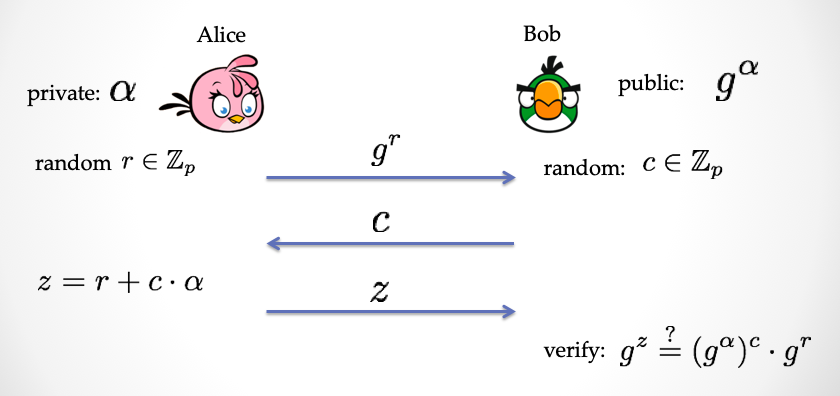
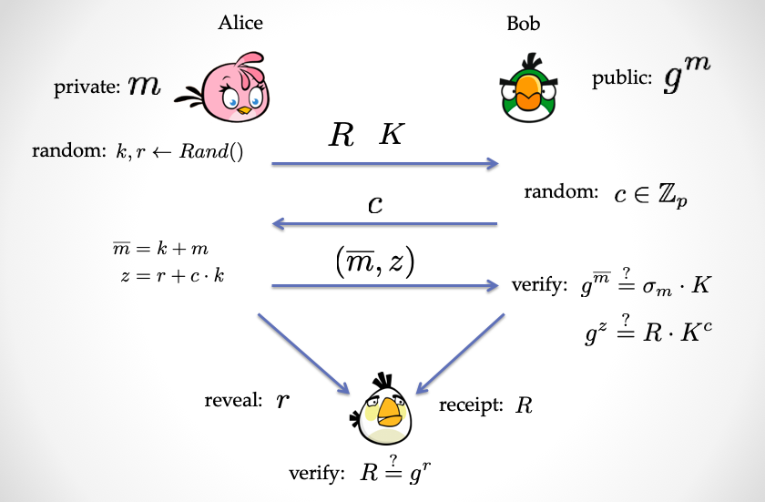
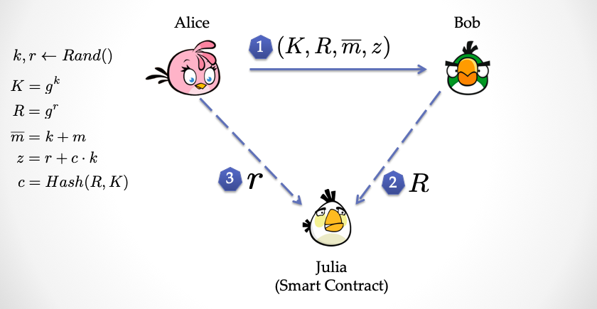

zkPoD 原理解读系列（一）
本文面向有一定密码学基础，或者对密码学感兴趣的读者。文中虽然有大量数学公式出现，但是都比较简单易于理解。
导言：zkPoD 是什么？
zkPoD 实现了去中心化的「零知识有条件支付」，支持上 GB 数据的零信任公平交易。关于「零知识有条件支付」的概念请看这篇概述文章 『zkPoD：区块链，零知识证明与形式化验证，实现无中介、零信任的公平交易』。zkPoD 是一个全新的实现 ZKCP 目标的方案。目前 zkPoD 已经支持上 GB 的数据，支持低 TPS 公链，也支持高 TPS 联盟链；既支持二进制数据，也支持带有内部丰富类型与结构的表格数据。与传统的「受信第三方」相比，zkPoD 利用区块链来作为一个「Trustless 第三方」，实现了的「零信任公平交易」。
zkPoD 也是一个实现数据与价值双向流通的底层基础协议
zkPoD 开源代码与更多文档请见：https://github.com/sec-bit/zkPoD-node
Proof-of Delivery (PoD) 协议
PoD 是实现 zkPoD系统的核心协议。PoD 协议实现了借用区块链智能合约来进行「数据」和 「Token」的原子交换，并且保证买卖双方的公平性。PoD 并没有像 ZKCP[1] 那样采用单一的 zkSNARK 方案来实现原子交换，而是利用了 Pedersen Commitment，Schnorr Protocol 等密码学经典方案来实现。这样 PoD 可以做得更高效，同时易扩展。同时 PoD 协议的目标做到「可证安全」、「可证公平」。利用形式化的证明来构建坚实的「信任根基」。
本文介绍一个极简的 PoD 协议——PoD-Tiny，这个协议简化了很多问题，并不实用，但是可以帮助读者快速理解 PoD 的原理和面临的挑战。
假设我是卖家，而你需要从我手里买一个数据文件，这个协议的一个大致流程是：
- 步骤一：我把「数据」加密后，传给你
- 步骤二：你把「Token」交给区块链「智能合约」
- 步骤三：我用「密钥」交换「智能合约」手里的「Token」，然后你紧接着可以从智能合约中读取「密钥」进行「数据」解密
是不是很简单？聪明的你此刻正在高度怀疑这个过程是不是哪有问题。
「公平交易」中的关键问题
- 关键问题(1)：你收到的加密数据确实是你想要的数据
- 关键问题(2)：你收到加密数据之后，不付钱就跑路怎么办
- 关键问题(3)：而我出示给智能合约的密钥必须是真密钥，否则拿不到 Token
- 关键问题(4)：我出示真密钥之后，必须要能拿到 Token
我们接下来就抽丝剥茧，讨论下上面这几个关键问题，帮忙大家理解 PoD-Tiny 是怎么巧妙解决这些问题的。
锁定数据的特征：Authenticator
对于关键问题(1)，我们需要一个锚点，什么是你想要的数据。这里简单起见，假设我们事先约定了一个数据文件的唯一标签，或者特征。然后你购买的数据需要能和这个标签一一对应。
一般来说，大家喜欢用 Hash 来标记对一个字符串的特征，比如计算
|
|
我们看下这个字符串 "hello,zkPoD!" 总共有 12 个字节大小，也就是 96 个 bit。于是我们可以将这 12 个字节转换成一个有限域上的整数（这里我们假设有限域的大小接近 256 bit ）。这样我们可以把这个字符串编码成一个整数，我们姑且用一个符号表示这个整数， 假设是 $m$。
我们通过下面的运算产生这个数据的「承诺」。
$\sigma = g^{m}$
承诺也叫 Commitment，它可以做到和数据的一一对应，同时并且能够隐藏数据的值。 这里的 $\sigma$ 在 zkPoD 系统中被称为「认证信息」 Authenticator（而这里的$g$ 是一个循环群$\mathbb{G}$的生成元，或者从实现角度讲，$g$ 是椭圆曲线群上的基点）。
「认证信息」Authenticator 可以向所有人公开，我们不用担心会泄露原始数据信息。这是因为，通过 $\sigma$ 是难以反算出来 $m$，这个逆运算是一个有限域的「求对数」的运算。假如有限域比较大的话，这个对数运算是非常非常困难的。这就是常说的「离散对数难题」假设，即 Discrete Log Problem。抛开这些理论细节，我们只要知道，Authenticator 就可以放心交给任何人，而不用担心$m$ 被逆向破解。
「认证信息」为什么采用这种群指数形式，而不是采用大家所熟悉的 Hash 运算。这是因为「认证信息」具有加法运算同态性。所谓同态性质，大家可以这么理解：明文数据具有的某种运算，可以映射到密文的运算中。假设有三个数据明文，m1， m2 还有 m3，其中 m1 = m2 + m3。
他们的 Authenticator 分别计算如下：
$\sigma_1=g^{m_1}$, $\sigma_2=g^{m_2}$, $\sigma_3 = g^{m_3}$,
我们可以计算
$\sigma_1 \overset{?}{=} \sigma_2 \cdot \sigma_3$
来验证 $ m_1 \overset{?}{=} m_2 + m_3 $。大家可以发现，虽然一个吃瓜群众知道了 $\sigma_3$，他也不能反算出$m_3$。但是他知道 $m_3$ 等于另外两个数的和，虽然他完全不知道这个三个数具体是多少。
注：这里的加法是模加，$a + b$ 是 $a + b \mod p$。简化起见，后续的加减乘除一律约定是有限域上的运算。
剩下的事情就简单了，在协议步骤一，我可以选一个随机数 $k$ 作为密钥，计算 $\overline{m}=k + m$ $\overline{m}$ 就是加密数据。我可以把 $K= g^k$ 也发给你，这样你手里有三样东西， $\sigma$，$K$，还有$\overline{m}$。你就可以用下面的公式来「同态地」校验加了密的$\overline{m}$ 确实是数据$m$的密文：
$g^{\overline{m}} \overset{?}{=} K\cdot \sigma$
并且，通过上面的公式，你还能知道一个关键信息：密钥是一个关联到 $K$ 的数值。尽管这时候你完全不知道 $m$ 和 密钥 $k$。这个信息也是解决**关键问题(3)**的关键所在。
总结一下：
通过同态性，买家可以在数据加密的情况验证数据是否满足一些条件
回忆一下关键问题(2)：
- 关键问题(2)：你收到加密数据之后，不付钱就跑路怎么办
解决这个问题是核心方法是「零知识证明」。如果买家拿到加密数据之后，从中分析不出来任何多余的信息，那么就不会损害卖家利益，也就能解决关键问题(2)。简单讲，如果加密数据是零知识的，就不怕买家拿了加密数据不给钱就跑路。所谓的「零知识」，大家可以这么通俗理解：买家拿到的加密数据后，就像拿到一堆随机数一样，没有任何信息量。怎么做到零知识呢？PoD-Tiny 使用了一个经典的 Schnorr 协议。
插播科普：Schnorr 协议 与 「零知识」
Schnorr 协议是非常经典的教课书例子，我这里快速带大家过一遍这个协议。Schnorr 协议的用途之一是用来做身份认证，它是一个两方安全协议，一方证明者「Alice」 ，向另一方「验证者」Bob证明她拥有一个公钥对应的私钥。
首先 Alice 产生一对「公私钥」，$(pk, sk)$。然后 Bob 持有 Alice 的公钥 $pk$。当 Alice 要向 Bob 证明身份时，他们会通过一个「三步交互协议」来完成证明：证明 Alice 拥有私钥 $sk$。如果 Bob 接受了这个证明，那么 Bob 会认为 对面证明她有私钥的人就是 Alice。下面简单描述下这个协议：

$sk = \alpha, pk=g^\alpha$
公开输入：$pk=g^\alpha$
Alice私有输入：$sk = \alpha$
第一步：Alice 选择一个随机数 $r$，并且发送 $r$ 的「承诺」$R = g^r$ 给 Bob
第二步：Bob 发回一个随机数 $c$，作为挑战数
第三步：Alice 计算 $z=r+c\cdot \alpha$，然后将 $z$ 发送给 Bob，然后 Bob 通过如下的公式来验证：
验证公式：$g^z \overset{?}{=} R \cdot pk^c = g^r\cdot g^{c\cdot \alpha}$
这个 Schnorr 协议具有三个性质：
- Completeness
- Special Soundness
- Special Honest Verifier Zero-Knowledge
其中第三个性质就是「零知识」，这个性质保证了：在这个协议交互过程中，Bob 无论如何都不会得到关于私钥的任何信息。
注:严格地讲， Schnorr 协议并不是「Full-ZK」，只能保证「HVZK」，这是一个相对弱一些的零知识性质。不过大家暂时不用纠结这一点，Schnorr 协议可以通过一些技巧升级为「Full-ZK」。
PoD-Tiny：一个简单的 PoD 协议
如果大家已经大概记住了 Schnorr 协议的细节，那么我来展示一个协议叫做 PoD-Tiny。
PoD-Tiny 是一个非常简化的 PoD 协议，虽然不实用，但帮助大家理解 PoD 协议的工作原理。
协议描述：假设 Alice 拥有一个数据明文 $m$，然后 Bob 拥有这个数据的 Authenticator（$\sigma_m$），这里还有一个 「Trustless 第三方」，我们暂且叫她 Julia。请大家记住：她是一个智能合约。
协议：
开场前的道具：$m$, $\sigma_m$, $g$, 一个随机数产生器 $Rand(\cdot)$
角色：
- Alice：拥有 ECC参数 $g$，数据 $m$，一次性密钥 $k=Rand()$
- Bob：拥有 ECC参数 $g$，$\sigma_m$
- Julia: 拥有 ECC参数 $g$

步骤：
第一步：Alice 产生一个随机数，$r \overset{$}\leftarrow Rand()$ ，然后发给 Bob 两个数 $K=g^k$ 和 $R=g^r$
第二步：Bob 产生一个随机数 $c\overset{$}\leftarrow Rand()$，发送给 Alice
第三步：Alice 计算两个数字 $\overline{m}=k + m$，$z=r+c\cdot k$，并且发送给 Bob。这两个数，第一个 $\overline{m}$ 是用一次性密钥 $k$ 加密后的密文，而 $z$ 是「对密钥加密」生成的密文。
注：什么？对密钥加密？没错，这里 Alice 用第一步生成的随机数 $r$，加上第二步 Bob 提供的挑战数对 $k$ 做了加密，得到了 $z$。
第四步：Bob 对收到的数据密文 $\overline{m}$ 进行验证（公式(1) ），并且对密钥的密文进行验证（公式(2) ）：
- 验证公式(1)：$g^{\overline{m}} \overset{?}{=} \sigma_m \cdot K$
- 验证公式(2)：$g^{z} \overset{?}{=} R \cdot K^c$
注：在第四步中，Bob 需要搞明白两件事情：首先传给他的密文数据（$\overline{m}$）是不是能对应到之前数据的锚点（$\sigma_m$）；然后密文数据（$\overline{m}$）是不是由某一个未知密钥 $X$ 加密的，并且这个「未知密钥」的密文应该等于第三步中 Alice 发过来的「密钥密文」（$z$）。倘若如此，在未来的某个时刻，若 Bob 得到「密钥密文的密钥」（$r$） 之后，就可以做两次解密动作来成功拿到数据明文（$m$）。两次解密动作为：首先 Bob 用「密钥密文的密钥」$r$ 还有挑战数 $c$ 解密 密钥密文 $z$，得到数据密钥 $k$，然后再用数据密钥来解密 数据密文$\overline{m}$，从而得到数据明文 $m$。
再注：上面的协议第一步到第四步，其实大家可以发现和 Schnorr 协议非常类似。只不过把 $\alpha$ 替换成了一个一次性密钥 $k$。然后另一个不同点是，$K = g^k$ 相当于原 Schnorr 协议中的公钥，并不是一开始发给了Bob，而是在协议的第一步和$R$ 一起发送给 Bob。不管如何，从整体上，这四步协议正是一个 Schnorr 协议的扩展。当然到这里还没完，接下来区块链要登场了，Bob，Alice 要和 Julia开始进行交互。
第五步：如果 Bob 在第四步中验证公式(1)和公式(2)通过，那么说明 Alice 发的数据都是正确的。这时候 Bob 要发给 Julia 一个「数据交付收据」(Delivery-Receipt)。
注：这个收据是为了告诉 Julia，Bob他已经收到了加过密的数据了，但是密钥还没收到。密钥需要 Julia 帮他接收并验证。那么验证的凭据是什么呢？正是「密钥密文的密钥」对应的「承诺」，是不是有点绕，这个收据就是协议第一步 Alice 发给 Bob 的 $R$。
第六步：Alice 向 Julia 出示「密钥密文的密钥」，也就是 $r$。Julia 检查下面这个关键公式。如果验证通过，Julia 可以将 Bob 账户上的 Token 转给 Alice。
- 验证公式(3)：$R\overset{?}{=} g^r$
我们看看关键问题(3)是如何解决的。
- 关键问题(3)：Alice 出示给智能合约的密钥必须是真密钥，否则拿不到 Token
在协议的第一步，Alice 给 Bob 发送了一个「密钥的密钥」的「承诺」$R$；然后在协议的第五步，Bob 把 $R$ 转交给了 Julia；第六步，Alice 兑现承诺，揭示对应的 $r$。如果 Alice 出示一个错误的值，Julia 立即就会发现公示(3)不成立。
还有一个：
- 关键问题(4)：Alice 出示真密钥之后，必须要能拿到 Token
在协议的第六步，Julia 要检验公式(3)。在 Alice 出示正确的 $r$ 的情况下，如果等式不成立，那么只有两种情况：（1）Julia 故意捣乱， （2）$R$ 的值不正确。对于前一种情况，需要保证 Julia 的合约代码确实没有漏洞，功能正常，这个需要额外采用「形式化验证」的方法来解决。对于后一种情况，这里需要 Alice 在第六步先检查一下，在第五步中 Bob 提交的 $R$ 是不是一个正确的值。这里请注意：Julia 是一个公开的智能合约，她拿到的任何数据都是公开可见的，她的任何内部状态与计算过程都是公开可见的。
协议的安全性与公平性分析
如果我们不考虑多次交易，PoD-Tiny 是一个「公平」的交易协议。我们接下来依次分析下为何这个协议是公平的。
我们首先考虑 Alice 有哪些作弊手段：
- 将假的数据 $m'$ 加密后传给 Bob
- 加密数据时用的密钥 $k$，但是在加密密钥的时候却用的是 $k'$，并且 $k\not= k'$
- 向 Julia 出示一个假的密文密钥 $r'$
这里如果 Alice 采用作弊手法 A1，那么 Bob 在校验公式(1)时能够发现；如果 Alice 采用作弊手法 A2，那么 Bob可以通过计算公式(2)发现；如果 Alice 采用作弊手法 A3，那么 Julia 通过公式(3)就能发现。
我们再考虑 Bob 都有哪些作弊手段：
- Bob 在拿到加密数据 $\overline{m}$ 之后，就退出协议，然后尝试破解密文
- Bob 在验证加密数据之后，向 Julia 出示一个错误的「交付收据」
- Bob 账户没有足够的 Token
分析：如果 Bob 采用作弊手段 B1，那么 Bob 是无法从加密数据中得到任何信息的，因为协议的前三步是「零知识的」（准确地说：Honest Verifier Zero-Knowledge）。如果 Bob 采用手段 B2，Alice 可以在第六步检查下 Julia 手里的「数据交付收据」$R$ 是不是和她在第一步发给 Bob 的相同，一旦 Bob 提交错误的收据，Alice 可以直接退出协议，拒绝出示密钥。同样，如果 Bob 采用手段 B3，Alice 可以在第六步的时候检查 Bob保存在 Julia 处的 Token 是否足够，如果不足则直接退出协议。
最后，Julia 有没有可能作弊呢？Julia 是智能合约，她的任何行为和内部状态都能被任何人读取，那么通过 Julia 是有可能产生信息泄露的，从而对 Alice 或者 Bob 不利。但是请大家注意下，Julia 其实并不接触任何和数据明文 $m$ 相关的信息，也就从链上不会泄露 $m$ 的信息。Julia 接触到的信息只有两个，$R$ 和 $r$。
压缩到最简协议
我们数一数上面的协议的交互步骤总共有五步，分别是 Alice 与 Bob交互三次，Bob 与 Julia 交互一次，Alice 与 Julia 交互一次。安全协议里面有一个叫做 Fiat-Shamir Heuristic 变换，它可以将 PoD-Tiny 协议中的前三步，直接「压缩」成为一步。
压缩前：
| Step | Interaction | Info |
|---|---|---|
| 第一步 | Alice => Bob | $(K, R)$ |
| 第二步 | Bob => Alice | $c$ |
| 第三步 | Alice => Bob | $(\overline{m}, z)$ |
| 第四步 | Bob => Julia | $R$ |
| 第五步 | Alice => Julia | $r$ |
压缩后：
| Step | Interaction | Info |
|---|---|---|
| 第一步 | Alice => Bob | $(K, R, c, \overline{m}, z)$，这里 $c=Hash(\sigma_m || K || R)$ |
| 第二步 | Bob => Julia | $R$ |
| 第三步 | Alice => Julia | $r$ |
我们发现最主要的不同是，在压缩后的PoD-Tiny 中挑战数不再由 Bob 产生，而是由 Alice 产生。这里大家可能会产生疑问，这样做会不会对 Bob 不公平？这相当于 三步的 Schnorr 协议直接压缩成一步就完成了。这里先下个结论：压缩后的协议保持零知识的性质，仍然对双方公平。原因是，压缩前的协议可以证明 HVZK(Honest Verifier Zero-Knowledge)；压缩后的协议可以证明出 NIZK (Non-Interactive Zero-Knowledge)。但是安全性在压缩前后的对比会比较 Subtle，这里不再展开。
经过压缩，最后这个协议变得不可思议地简洁：

迈向实用性的挑战：安全与性能
最简协议 PoD-Tiny 只是万里长征的第一步，当面对纷繁冗杂的现实世界，要将理论变成代码时，会面临许许多多的问题。这些问题会相互纠缠在一起，反过来又会影响着协议在理论层面的设计。
- 如何支持长度超过 1MB 的数据，甚至上 GB
- 如何有效降低链上验证计算的开销
- 如何支持以太坊，并免疫以太坊上的各式安全问题
- 如何支持数据的复杂同态计算
zkPoD 在工程阶段做了不少的和安全和性能相关的改进和创新。请关注我们的后续文章，说说我们的感悟和体会。
写在最后
区块链到底能做什么？我在最近一年里看到了很多相当「悲观」的论调，我想 PoD 协议应该会给这些怀疑论者带来些许启发。区块链在 PoD 协议中起到了一个第三方的关键角色，而且让这个协议变得不可思议的简洁，这是我们始料未及。